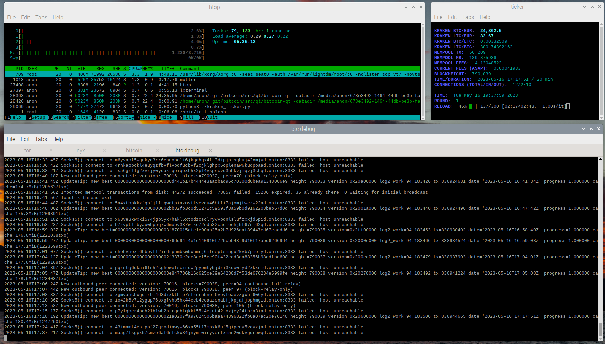

Deine eigene Bitcoin Bank
Dieser Workshop soll dazu dienen, ein tieferes Verständnis für die Funktionsweise des Bitcoin/Lightning Netzwerkes zu bekommen. Am Ende werden wir eine Bitcoin Full Node und eine Lightning Node am laufen haben. Wir werden verschiedene Lightning Kanäle öffnen und dafür sorgen, dass diese Kanäle immer ausbalanciert sind. Wir werden regelmässige Gebühren im Lightning Netzwerk generieren um die Stromkosten zu covern. Als Hardware benutzen wir einen RaspberryPi 400 mit 4BG RAM, 32GB SD-Karte und eine externe 1TB SSD. Da es sich bei den Teilnehmern um technisch interessierte Jugendliche handelt, wird die benötigte Software selbst erstellt und es wird auf verschiedene Programmiersprachen bzw. OpenSource/Proprietäre Software eingegangen. Das ganze Projekt ist fortlaufend - daher speziell zu Beginn nicht vollständig. Lets start!
Unser Raspberry 400.
Kurzer Überblick unseres Systems.
Wir verzichten hier auf die detaillierte Vorgehensweise um den Raspi mit einem Betriebssystem zu bespielen. Dafür gibt es genug Tutorials im Netz. Um die Last gering zu halten deaktivieren wir sämtliche nicht benötigte Programme. Wir lassen uns alle laufenden Services anzeigen:
sudo service --status-all
Wir deaktivieren den/die nicht benötigten Programme (hier cups):
sudo systemctl stop cups && sudo systemctl disable cups
Nun kurz eine grundlegende Überlegung: wollen wir anonym bleiben? Klare Antwort: Ja. Wir installieren daher als erstes Tor. Vorher installieren wir alle Pakete, welche wir später noch brauchen werden:
sudo apt install git openssl build-essential libtool autotools-dev automake pkg-config bsdmainutils python3 make automake cmake curl g++ binutils bsdmainutils pkg-config patch bison nyx ufw geany keepassxc
Wir aktivieren die Firewall und deaktivieren den Swap:
sudo ufw enable && sudo swapoff -a
Wir clonen und installieren Tor:
mkdir .git && cd .git && git clone --recursive https://github.com/torproject/tor.git && cd tor && ./autogen.sh && ./configure --disable-asciidoc && make -j3
Die ausführbare Datei befindet sich nun unter ~/src/app. Wir kopieren die Konfigurationsdatei in diesen Pfad, wechseln in den Pfad und öffnen die Datei:
mv src/config/torrc.sample.in src/app/torrc && cd src/app && nano torrc
Wir lassen Tor nicht als Daemon laufen um die Ausgabe verfolgen zu können, wir ändern den Pfad zu einem vorher auf der externen SSD erstellten Ordner, wir definieren den ControlPort (default 9051) und aktivieren die CookieAuth. Ein Beispiel kann hier gefunden werden.
Danach starten wir Tor mit:
./tor -f ./torrc
Das wäre geschafft! Tor läuft nun und wir können uns endlich dem eigentlichen Thema Bitcoin widmen. Die Grundlage aller weiteren Apps ist ein Bitcoin Full Node. Dies bedeutet, dass unser Bitcoin Knoten ausgehende und ankommende Verbindungen zulässt. Wie zuvor clonen wir den Quellcode und wechseln dann in das entsprechende Verzeichnis:
cd $HOME/.git && git clone --recursive https://github.com/bitcoin/bitcoin.git && cd bitcoin
Falls eine bestimmte Version gewünscht wird muss diese ausgecheckt werden (z.b. git checkout 24.x). Wie bereits angedeutet soll es bei diesem Workshop auch um das Verständnis gehen. Daher erstellen wir auch alle Abhängigkeiten für unsere Bitcoin Full Node selbst. Dazu wechseln wir in das ensprechende Verzeichnis und starten den "build process":
cd depends && make -j3
Das kann nun eine Weile dauern. In der Zwischenzeit wurden Fragen beantwortet, der Unterschied zwischen OpenSource und Proprietär erklärt und kurz auf die Programmiersprachen C und Python eingegangen. Wenn der build process abgeschlossen ist wechseln wir zurück in das Hauptverzeichnis und starten den build process für unseren Bitcoin Knoten. ACHTUNG: Falls der geneigte Leser ein anderes Betriebssystem installiert hat (z.b. arm) muss der CONFIG Pfad natürlich geändert werden:
cd .. && autogen.sh && CONFIG_SITE=$PWD/depends/aarch64-unknown-linux-gnu/share/config.site ./configure && make -j3
Auch das dauert nun eine Weile auf unserem kleinen Raspberry. Falls sich der ein oder andere Profi jetzt fragt warum kein cross compiling: next level, next time. In der Zwischenzeit legen wir uns auf der SSD einen Ordner an, der unsere Config, unsere Wallet, und die komplette Blockchain enthalten wird. Wir nutzen nicht die devtools um die Konfigurationsdatei zu erstellen. Wir erstellen sie manuell. Vorher erstellen wir ein Zertifikat für den späteren RPC-Zugriff. Beide Dateien gehören in den erstellten Bitcoin (Data) Ordner. Wir öffnen ein neues Terminal:
openssl genrsa -out btc.pem 2048 && openssl req -new -x509 -nodes -sha256 -days 3650 -key btc.pem > btc.cert
Danach erstellen wir unsere Konfigurationsdatei (Bild s.u.). Ein Beispiel kann hier eingesehen werden:
nano path-to-your-data-directory/bitcoin.conf
Wenn der build process abgeschlossen ist befinden sich die ausführbaren Dateien unter ~/src bzw. ~/src/qt (GUI). Wir wollen hier die GUI starten und die Logs separat ausgeben:
cd src/qt && bitcoin-qt -datadir=your-path-to-your-bitcoin-data
Wir öffnen ein neues Terminal um die Logs auszugeben (optional):
cd your-path-to-your-bitcoin-data && tail -f debug.log
Beispiel für unsere Bitcoin Konfigurationsdatei.
Bitcoin Core mit Proxy über Tor und v3 Onion Adresse.
So weit - so gut. Unser Full Node verbindet sich jetzt automatisch NUR über Tor und zusätzlich nur zu Onion Adressen. Da wir nach aussen nur unsere Onion v3 Adresse zeigen, erfolgen auch alle eingehenden Verbindungen ausschliesslich über Tor. Wir haben zusätzlich htop am laufen um die Last im Auge zu behalten, der Ticker ist ein simples Python Script, dass die aktuellen Kurse von Kraken holt und ein paar Daten aus Bitcoin Core ausliesst. Wenn der geneigte Leser uns bis hierher gefolgt ist, müsste der Desktop nun ungefähr so aussehen:
Als nächstes installieren wir einen Lightning Knoten. Lightning ist eine "second layer solution" und sitzt "on top" auf der Bitcoin Blockchain ("layer one"). Es gibt dafür (wie bei Bitcoin Knoten) verschiedene Lösungen. Am weitesten verbreitet sind CLN von Blockstream und LND von LightningLabs. Eigentlich wollte ich CLN wählen - leider funktioniert nach dem letzten Update keines der benötigten Plugins bei meinem persönlichen Node. Daher nehme ich LND. LND ist in Go geschrieben. Go wurde von Google entwickelt und muss erst auf unserem Raspi installiert und konfiguriert werden. LND benötigt zum aktuellen Zeitpunkt golang v1.19. Wir überprüfen kurz welche Version in den Paketquellen zur Verfügung steht:
apt policy golang
Leider steht aktuell nur Version 1.15 in den offiziellen Paketquellen zur verfügung. Wir müssen Go also manuell installieren. Vorher klonen wir den Quellcode von LND auf unseren Raspi:
cd $HOME/.git && git clone --recursive https://github.com/lightningnetwork/lnd.git && cd lnd
Um die aktuelle Version von Go zu installieren, navigieren wir zu Google Downloads und laden uns die aktuelle Version (hier 1.20) herunter. Wir öffnen ein neues Terminalfenster und wechseln in das Download Verzeichnis:
cd $HOME/Downloads && wget https://go.dev/dl/go1.20.4.linux-arm64.tar.gz
Wir entpacken die Datei in unserem lokalen Userverzeichnis:
sudo tar -C /usr/local -xzf go1.20.4.linux-arm64.tar.gz && rm go1.20.4.linux-arm64.tar.gz
Damit unser Raspi auch weiss wo er Go findet und wohin er die ausführbaren Dateien legen soll, müssen wir ihm entprechende Hinweise geben. Dafür geben wir folgendes in unserem Terminal ein:
cd .. && mkdir go && cd .git/lnd && export PATH=$PATH:/usr/local/go/bin && export GOPATH=$HOME/go
Go ist nun erfolgreich installiert. Bei Eingabe von
echo $PATH && echo $GOPATH
werden beide Pfade angezeigt. Wir können nun LND erstellen mit:
make release-install -j3
Nach Beendigung befinden sich unsere ausführbaren Dateien im Ordner ~/go/bin. Bevor wir LND nun erstmals starten können, müssen wir als erstes unsere Konfigurationsdatei anpassen. Wir erstellen für unseren LND Knoten auf unserer externen HD einen Ordner und kopieren die Konfigurationsdatei hinein. Entweder nehmen wir den Datei Manager vom Desktop oder im Terminal mit:
mkdir path-to-your-external-hd/.lnd && mv ./sample-lnd.conf path-to-your-external-hd/.lnd/lnd.conf
Nun passen wir die Konfigurationsdatei noch an. Ein Beispiel kann hier gefunden werden. Viele Voreinstellungen können übernommen werden.
Wichtig sind die Einstellungen für unseren Bitcoin Full Node (Pfad zum Ordner/Konfig) und die Einstellungen für Tor. Tor muss aktiviert werden. Nach
einer Abstimmung lautet der Alias unseres LND Knotens WhiteDeer
. Nun starten wir LND das Erste mal mit:
$HOME/go/bin/lnd --lnddir=path-to-your-external-hd/.lnd
Nachdem der Daemon gestartet wurde, wird nach dem Passwort für die Wallet gefragt. Damit ist nicht die Wallet unseres Bitcoin FN gemeint. LND erstellt
eine eigene Wallet in unserem LND Ordner auf der externen HD. Da wir noch keine Wallet haben, erstellen wir eine neue Wallet. Dazu öffnen wir ein neues
Fenster in unserem Terminal und starten lncli (command line interface
) mit:
$HOME/go/bin/lncli --lnddir=path-to-your-external-hd/.lnd create
Es wird nach dem Passwort gefragt und nach Initialisierung auch ein 24-stelliger Mnemonic Seed angezeigt. Ich sage es gleich vorab: das ist kein bip39 seed! In dem Workshop wurde nun auf bip32/bip39 eingegangen und auf die (Nicht-) Kontrolle der Prüfziffer. Im späteren Verlauf dieses Workshops importieren wir die LND-Wallet in unseren Full Node - auch um Wiederherstellung zu demonstrieren, falls Daten verloren gehen oder zerstört werden. Im Workshop werden alle sensiblen Daten mittels KeePassXC gespeichert. Es dauert nun eine kleine Weile bis unser LND mit dem Netzwerk synchronisiert ist. Wir können eine allgemeine Übersicht mit folgender Eingabe bekommen:
$HOME/go/bin/lncli --lnddir=path-to-your-external-hd/.lnd getinfo
LND synchronisiert mit dem Netzwerk
getinfo
Ausgabe in der CLI. Synchronisiert mit der Bitcoin Blockchain aber noch nicht mit dem Lightning Netzwerk. Unter uris
unsere Tor Onion URI.
Im späteren Verlauf dieses Workshops installieren wir eine graphische Benutzeroberfläche um einen gefälligen Überblick zu bekommen. Wir überlassen für heute LND seiner Synchronisation. Das Wichtigste haben wir nun installiert. Um aber tatsächlich unsere Vorgaben erfüllen zu können, müssen wir noch einiges tun.
... will be continued soon ...